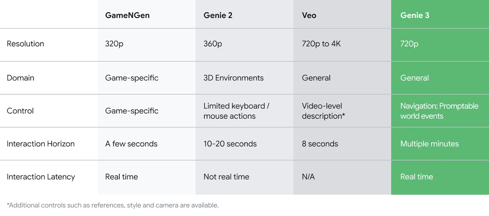
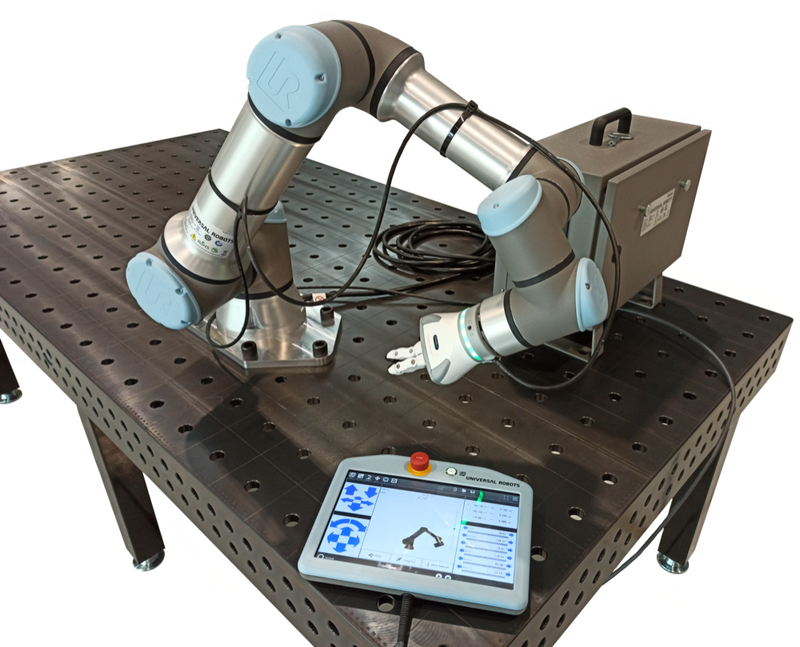
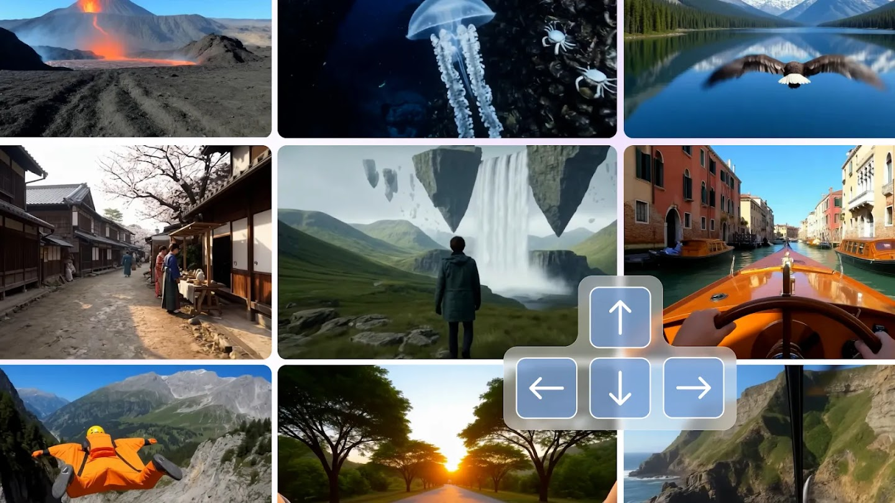

Executive Summary
구글 딥마인드가 장면과 소리를 한꺼번에 만들어 내는 세계 생성 모델을 내놨다는 소식이다. 10월 27일 연구 프리뷰로 공개한 Genie 4는 말로 장면을 띄우면 그 장면에 어울리는 주변음과 음악, 그리고 입력에 반응하는 대화까지 실시간으로 만들어 낸다. 딥마인드는 이것을 소리를 자체적으로 생성하는 자사의 첫 실시간 월드 모델이라고 불렀다.
같은 발표에 로보틱스 시연이 함께 실렸다. Gemini 4 Argon이 아프트로닉의 휴머노이드 아폴로가 체커를 두는 일을 단계로 쪼개면, Genie 4가 그 단계를 실시간으로 시뮬레이션한다. 그런데 딥마인드는 바로 그 글에서 복잡한 물리 상호작용과 장기 일관성이 아직 연구 중인 영역이라고도 적었다. 로봇을 가르치는 데 쓰겠다는 용도와, 물리가 아직 안 맞는다는 자백이 한 페이지 안에 나란히 있다.
1절부터 4절까지는 딥마인드 공식 글과 테크크런치 보도, 그리고 합성 궤적으로 학습한 로봇 정책을 실제 로봇에서 평가한 선행 연구에서 확인되는 내용을 따라간다. 생성량이 늘어도 검증이 저절로 쉬워지지 않는다고 보는 5절은 이 글의 해석이다.
주요 수치
첫 칸은 Genie 4의 능력을 적은 숫자다. 나머지 셋은 Genie 4가 아니라 같은 일을 하는 다른 월드 모델들을 실제 장비에 올려 얻은 조건과 성적이고, 그 사정은 4절에 적었다.
출처: TechCrunch (2026-10-27) · arXiv 2607.29302 WorldArena 평가 · Google DeepMind
2분
장면이 흐트러지지 않고 버티는 시간
테크크런치가 전작의 두 배로 적은 값. 딥마인드 공식 글에는 이 수치가 없다
25개
한 과제당 월드 모델이 내주는 합성 궤적
그 데이터로 학습한 정책을 실제 로봇에서 과제마다 100번 돌려 성공률을 잰다
14~58%
공개된 월드 모델 5종이 받은 성공률
같은 두 과제, 같은 조건에서 받은 점수다. 최저와 최고가 네 배 넘게 벌어진다
71.5%
실제 데이터로 학습한 정책의 성공률
합성 궤적이 넘어야 할 기준선. 궤적을 한 개도 더 받지 못하면 3.50%다
Genie 4가 새로 얻은 것은 소리다
Genie 4는 10월 27일 연구 프리뷰로 나왔다. 받는 쪽은 신뢰 테스터로 한정됐고, 곧 Project Genie의 Google AI Ultra 구독자와 Gemini API·Google AI Studio의 조기 접근 파트너에게 열린다고 딥마인드가 밝혔다. 아직 누구나 켜 보는 물건은 아니다.
전작과 가장 크게 갈리는 대목은 소리다. 딥마인드는 Genie 4를 소리를 자체적으로 생성하는 자사의 첫 실시간 월드 모델이라고 소개했다. 만들어진 장면에는 그 장소의 주변음이 깔리고, 등장인물은 사용자의 입력에 반응해 대화를 주고받는다. 영상을 먼저 만든 뒤 소리를 입히는 방식이 아니라, 세계가 돌아가는 동안 소리가 함께 생긴다는 뜻이다.
세계가 도는 중에 말로 고칠 수도 있다. 딥마인드가 공식 글에 적은 예는 날씨를 바꾸고, 카메라를 옮기고, 새로운 사람이나 사물을 들여놓는 일이다. 이때 제미나이가 그 지시를 장면에 맞게 다듬어 넘긴다고 같은 글이 밝혔다. 장면을 한 번 띄워 놓고 계속 손보는 사용 방식을 전제한 기능인데, 이 전제는 3절에서 다시 걸린다. 딥마인드가 꼽은 드리프트 조건에 반복 편집이 들어 있기 때문이다. 테크크런치는 이 기능을 실시간 조종이라고 부르며 전작보다 물리와 인물 동작이 사실적으로 바뀌었다고 전했다. 구글 딥마인드 엔지니어 디에고 리바스는 테크크런치에서 이 실시간성의 쓸모를 이렇게 설명했다.
"실시간이라는 점은 창작 공간에서 몰입의 흐름을 유지하는 것이 대단히 유용해지는 영역에서 가장 큰 가치를 갖습니다."
1.12분이라는 숫자는 어디서 왔나
이번 발표를 옮긴 기사 대부분이 장면 일관성 2분을 머리에 걸었다. 전작의 두 배라는 설명이 따라붙었다. 그런데 딥마인드 공식 글에는 이 수치가 없다. 공식 글이 쓴 표현은 짧은 세션 동안은 일관된 환경을 유지할 수 있다는 정도이고, 시간을 분 단위로 못 박지 않았다.
더 미묘한 지점은 전작 쪽이다. 2025년 8월 공개된 Genie 3의 공식 글은 720p 해상도에 초당 24프레임을 적으면서, 환경이 몇 분 동안 대체로 일관되게 유지되며 시각 기억은 1분 전까지 거슬러 간다고 썼다. 1분이라는 숫자가 여기 있다. 다만 그 1분은 장면이 버티는 시간이 아니라 모델이 앞서 본 것을 되짚을 수 있는 거리다. 일관성 쪽에 딥마인드가 붙인 말은 몇 분이었다.

두 배라는 계산은 이 두 수를 맞바꿔야 성립한다. 전작의 시각 기억 1분을 일관성 시간 자리에 놓고 후속작의 일관성 2분과 견주면 깔끔하게 두 배가 된다. 그런데 같은 글이 일관성에 대해 적은 값은 몇 분이고, 몇 분과 2분 사이에서는 늘었다는 말조차 바로 나오지 않는다. 능력이 제자리라는 뜻으로 읽으면 틀린다. 잰 잣대가 서로 다르다는 말이고, 늘어난 폭은 공개된 문서만으로 확인되지 않는다.
한 가지는 분명하게 적혀 있다. Genie 4가 만든 모든 영상과 오디오에는 SynthID 워터마크가 들어간다. 사람 눈과 귀에 걸리지 않는 표지로, 영상과 소리 양쪽에서 AI가 만든 것임을 식별하도록 돕는다. 생성물을 나중에 가려낼 장치를 모델과 함께 내보낸 셈이다.
지켜보는 쪽은 지어낸 세계만 본다
Genie 4는 혼자 돌지 않는다. 딥마인드는 Gemini 3.8 Flash가 루프 안에서 안내 역할을 맡는다고 적었다. Genie 4가 실시간으로 세계를 만들어 내는 동안 제미나이가 장면을 계속 관찰하는 구조다. 목표를 단계로 쪼개고, 지금 화면이 그 단계를 넘었는지 판단하는 것이 감독의 몫이다.
로보틱스 시연이 이 구조의 쓸모를 보여 준다. 딥마인드가 공개한 사례에서는 Gemini 4 Argon과 Genie 4가 함께 돌면서 아프트로닉의 휴머노이드 아폴로가 체커 한 판을 두는 과정을 실시간 단계로 쪼개 시뮬레이션했다. 테크크런치에서 구글 리서치 디렉터 테자스 쿨카르니는 이 조합을 하이브리드 월드 모델이라 부르며, 제미나이가 코드와 텍스트를 쓰고 Genie가 그것을 실시간으로 받아들이는 결합이라고 설명했다.
생성하는 쪽과 판단하는 쪽을 갈라 두는 설계는 믿을 만한 에이전트 시스템이 흔히 취하는 모양이다. 기술 매체 더 뉴 스택도 Genie 4를 다루며 제목부터 물리가 아직 맞지 않는다는 점을 겨냥했다. 다만 여기서 한 가지를 짚어 둘 만하다. 감독 역할을 맡은 제미나이가 보는 화면은 Genie 4가 지어낸 화면이다. 그러니 판단의 대상도 그 세계 안에서 그럴듯한가이지, 실제 물리와 맞는가가 아니다. 이 구분은 딥마인드가 적지 않은 것이고, 이 글이 덧붙인 해석이다.
딥마인드가 직접 적어 둔 숙제
발표문에서 가장 정보량이 많은 자리는 한계 문단이다. 딥마인드가 쓴 문장을 옮기면 다음과 같다.
"짧은 세션 동안은 일관된 환경을 유지할 수 있지만, 시각적 세부와 사물의 영속성은 시간이 지나면서 흔들리거나 떠내려갈 수 있습니다. 시뮬레이션이 더 오래 돌 때, 복잡한 프롬프트 편집을 여러 번 거친 뒤, 또는 장면 안을 돌아다닐 때 특히 그렇습니다. 복잡한 물리 상호작용, 실시간 오디오 정확도, 읽을 수 있는 글자의 렌더링, 공간 정확도, 장기 일관성은 지금도 연구가 진행 중인 영역입니다."
드리프트가 일어나는 조건이 셋으로 적혀 있다. 오래 돌릴 때, 여러 번 고칠 때, 안을 돌아다닐 때다. 세 조건을 로봇 학습 데이터를 만드는 작업과 겹쳐 보면 겹치는 면적이 작지 않다. 많은 양의 궤적을 뽑으려면 오래 돌려야 하고, 조건을 바꿔 가며 변형을 만들려면 여러 번 고쳐야 하며, 조작 과제는 대개 장면 안을 이동하면서 일어난다.
남은 과제 목록도 마찬가지다. 복잡한 물리 상호작용과 공간 정확도는 조작 로봇이 배워야 할 것의 핵심에 가깝다. 물건을 집고, 밀고, 맞물리게 끼우는 동작이 전부 거기에 걸린다. 딥마인드가 로보틱스 시연을 실으면서 같은 글에 이 목록을 적었다는 사실은 숨긴 것이 아니라 밝힌 것이다. 다만 밝혀진 공백이 메워졌다는 뜻도 아니다.
발표문에 없는 것은 숫자다. 체커를 두는 시연 영상은 있지만, 그 시뮬레이션으로 학습한 동작이 실제 로봇에서 몇 번 중 몇 번 성공했는지를 적은 값은 공식 글에 나오지 않는다. 능력을 보여 주는 장면과, 그 능력이 실제로 옮겨 갔는지 재어 본 값은 다른 종류의 증거다.
합성 궤적으로 배운 로봇의 성적표
지어낸 세계에서 배운 동작이 실제 로봇에서도 통하는지는 이미 재고 있다. 학계가 쓰는 잣대가 따로 있다. 올해 7월 공개된 BWM 논문이 그 사례다. 월드 모델을 데이터 엔진으로 놓고, 거기서 뽑은 합성 궤적으로 로봇 정책을 학습시킨 다음, 그 정책을 실제 로봇에서 돌려 성공률을 센다.
조건은 단순하다. WorldArena 평가에서 각 월드 모델은 두 과제 각각에 대해 합성 궤적 25개를 내준다. 그 데이터로 π₀.₅ 정책을 학습시키고, 과제마다 실제 로봇에서 100번씩 실행해 성공률을 잰다. 같은 두 과제를 실제로 수집한 데이터로 학습시킨 정책이 기준선이 된다. 기준선 점수는 병 위치 조정 77.00, 벨 누르기 66.00으로 평균 71.50이다. 바닥도 같이 적혀 있다. 궤적을 한 개도 더 받지 못한 정책은 평균 3.50에 그친다. 합성 궤적의 성적은 이 두 값 사이 어디쯤인지로 읽어야 한다.

표에 오른 줄은 아홉이다. 바닥과 기준선이 각각 한 줄이고, 합성 궤적을 내준 쪽이 일곱이다. 논문이 실은 순서 대신 점수가 낮은 쪽부터 적었다.
| 학습 데이터를 내준 쪽 | 두 과제 평균 성공률 | 비고 |
|---|---|---|
| 없음 (제로샷) | 3.50% | 궤적을 한 개도 더 받지 못한 정책 |
| Genie Envisioner | 14.00% | 공개된 월드 모델. 이름은 닮았지만 딥마인드 Genie 계열이 아니라 아지봇이 낸 별개 모델이다 |
| TesserAct | 18.00% | 공개된 월드 모델 |
| Wan 2.2 | 28.00% | 월드 모델이 아닌 범용 영상 생성 모델 |
| Vidar | 33.00% | 공개된 월드 모델 |
| RoboMaster | 37.50% | 공개된 월드 모델 |
| WoW | 58.00% | 논문이 가장 센 대안 공급처로 꼽은 월드 모델 |
| 실제 수집 데이터 | 71.50% | 합성 궤적이 넘어야 할 기준선 |
| BWM | 94.50% | 이 표를 실은 논문을 쓴 팀의 모델 |
이 표를 두 가지로 읽을 수 있다. 하나는 비관이다. 월드 모델 다섯 가운데 넷은 14.00%에서 37.50% 사이에 머물렀고, 실제 데이터로 학습한 71.50%에 못 미친다. 다른 하나는 낙관이다. 같은 표에서 WoW는 58.00%로 기준선에 바짝 붙었고, 맨 아래 BWM은 94.50%로 기준선을 넘겼다. 합성 데이터가 실제 데이터보다 나은 결과를 낼 수 있다는 보고다.
두 해석이 같은 표에서 나온다는 점이 이 성적표의 성질을 말해 준다. 같은 두 과제에 같은 궤적 수, 같은 실행 횟수인데 점수는 14.00%에서 94.50%까지 벌어진다. 그리고 가장 높은 칸은 그 표를 실은 논문을 쓴 팀이 자기 모델에 매긴 값이다. 잣대를 들이대는 것과 그 눈금이 공평하게 읽혔는지 확인하는 것은 아직 다른 문제다.
표를 아래위로 훑으면 두 가지가 더 걸린다. 월드 모델이 아닌 범용 영상 생성 모델 Wan 2.2가 28.00%로 월드 모델 둘을 앞질렀다. 월드 모델이라는 이름표가 더 나은 학습 데이터를 보장하지는 않는다는 뜻이다. 그리고 제로샷 3.50%를 바닥에 놓고 보면 일곱 공급처가 전부 그 위에 한참 올라와 있다. 합성 궤적이 쓸모없다는 결론은 이 표에서 나오지 않는다. 나오는 것은 어디서 받았느냐에 따라 결과가 여섯 배 넘게 갈린다는 사실이고, 그래서 공급처를 재는 일이 남는다.
Genie 4는 이 표에 없다. 평가가 이뤄진 시점이 발표보다 앞서기도 했고, Genie 4는 조작 데이터 생성을 겨냥해 만든 모델도 아니다. 그러니 이 숫자로 Genie 4를 채점할 수는 없다. 남는 것은 자리의 문제다. 로봇 학습 데이터의 공급처를 자처하는 발표가 나왔는데, 그 공급처를 재는 잣대는 이미 밖에 만들어져 있다. 아직 아무도 Genie 4를 거기에 대 보지 않았다.
페블러스가 Genie 4를 주목하는 이유
월드 모델의 해상도와 프레임 수는 페블러스가 따라갈 일이 아니다. 이 발표를 들여다보는 이유는 로봇을 가르칠 데이터의 출처가 바뀌는 자리이기 때문이다. 사람이 현장에서 찍어 모으던 영상을 모델이 지어내기 시작하면, 데이터의 양을 늘리는 비용은 급격히 내려간다. 그런데 그 데이터가 쓸 만한지 확인하는 비용은 같이 내려가지 않는다.

실제로 수집한 영상에는 품질을 보증하는 장치가 한 겹 붙어 있다. 그 장면이 실제로 일어났다는 사실 자체다. 로봇 팔이 병을 쓰러뜨렸다면 그것은 실제 물리에서 일어난 실패이고, 라벨이 틀렸더라도 사건은 참이다. 생성된 궤적에는 그 보증이 없다. 보기에 매끄러운 성공 장면이 실제 물리에서는 성립하지 않는 동작일 수 있고, 그 어긋남은 영상을 봐서는 드러나지 않는다. 4절의 표가 보여 준 14.00%와 94.50%의 간격이 바로 그 어긋남을 실제 로봇에서 센 값이다.
그래서 생성량이 늘어도 검증이 저절로 쉬워지지 않는다. 오히려 딥마인드가 적어 둔 드리프트 조건이 생성량과 같은 방향으로 움직인다. 오래 돌리고 여러 번 고칠수록 데이터는 많아지고, 같은 조건에서 세부와 사물은 흔들린다. 많이 만들수록 검증 대상이 늘고, 그 대상 하나하나가 덜 믿을 만해지는 구간이 생긴다. 합성 데이터를 로봇 학습에 쓰려는 조직이라면 세 가지를 먼저 정해 둘 만하다.
- 생성한 궤적의 합격 여부를 무엇으로 판정하는가. 사람이 영상을 보고 그럴듯하다고 하는 것과, 실제 장비에서 돌려 성공률을 세는 것은 다른 판정이다
- 그 판정을 누가 하는가. 데이터를 만든 쪽이 스스로 매긴 점수인지, 독립된 쪽이 같은 조건으로 잰 값인지가 갈린다
- 세션 길이와 편집 횟수를 기록해 두는가. 드리프트 조건이 밝혀져 있으니, 어느 구간에서 뽑은 데이터인지 남겨 두면 나중에 의심스러운 묶음을 골라낼 수 있다
Genie 4가 연 길은 분명하다. 말 몇 마디로 소리까지 있는 세계를 띄우고 그 안에서 로봇의 동작을 단계별로 돌려 볼 수 있게 됐다. 같은 발표가 그 세계의 물리가 아직 연구 중이라고도 적었다. 두 문장은 모순이 아니라 순서다. 지어내는 일이 먼저 가능해졌고, 지어낸 것이 맞는지 재는 일이 뒤따라야 한다. 지금 비어 있는 칸은 두 번째 쪽이다.
여기까지 읽어 주셔서 감사하다. 오디오 네이티브 생성과 감독 루프, 로보틱스 시연, 한계 목록, SynthID, 공개 범위는 딥마인드가 10월 27일 낸 공식 글에서 확인했다. 장면 일관성 2분과 인용한 두 발언은 테크크런치 보도에서, 전작의 720p·24fps와 몇 분 일관성·1분 시각 기억 서술은 2025년 8월 Genie 3 공식 글에서 가져왔다. 합성 궤적 25개·실행 100회라는 조건과 표의 성공률 아홉 줄은 arXiv 2607.29302의 WorldArena 데이터 엔진 평가(Table 3)에서 확인했다. 감독이 보는 것이 지어낸 세계뿐이라는 2절 끝의 지적과, 생성량이 늘어도 검증이 쉬워지지 않는다고 보는 5절은 이 글의 해석이다. 합성 궤적으로 학습한 정책을 실제 장비에서 검증해 본 일이 있다면 어떤 기준을 썼는지 들려주시면 좋겠다.
(주)페블러스 데이터 커뮤니케이션팀
2026년 10월 29일
참고문헌
학술 논문
- 1.BWM Team. (2026). "BWM: A Low-Cost High-Fidelity World Simulator for Robot Learning." arXiv:2607.29302, 7월 31일.
공식 문서
- 2.Google DeepMind. (2026). "Genie 4: A new generation of world simulation." Google DeepMind Blog, 10월 27일.
- 3.Google DeepMind. (2025). "Genie 3: A new frontier for world models." Google DeepMind Blog, 8월 5일.
업계·보도
- 4.TechCrunch. (2026). "Google's Genie 4 world model adds audio, more realistic worlds and real-time steering." 10월 27일.
- 5.TechCrunch. (2025). "DeepMind thinks its new Genie 3 world model presents a stepping stone toward AGI." 8월 5일.
- 6.The New Stack. (2026). "Google built AI agents a world to practice in. The physics still aren't quite right." 10월.